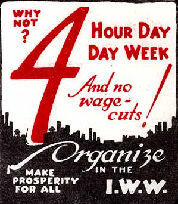
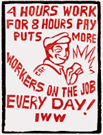
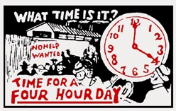
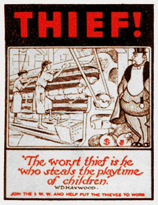

Arguments For a Four-Hour Day
by Jon Bekken, ©2000
This pamphlet is a revised and updated version of an article which appeared in Libertarian Labor Review #1 (1986), based on a presentation on the fight for a shorter workweek sponsored by the Chicago General Membership Branch of the Industrial Workers of the World in January 1986.
The Fight for the Four-Hour Day
On May 1, 1886, more than 300,000 workers struck thousands of shops across the United States in a national campaign for the Eight Hour Day. In Chicago, center of the movement and a stronghold of anarchist, revolutionary unionism,40,000 workers struck and 80,000 workers joined a May Day parade organized by the International Working People's Association and the revolutionary Central Labor Union. In the decades that followed, the Eight Hour Day and Five Day Week became universal (the 40-hour week was even enacted into U.S. law in 1938), and in the 1930s the American Federation of Labor launched a short-lived lobbying campaign for the Six Hour Day.
Yet today the 40-hour work week remains the legal norm - a norm as often honored in the breach as in reality. Indeed, the average full-time worker in the U.S. now works nearly 49 hours a week, according to the Harris Poll. (Government statistics put the work week at considerably less, largely because they draw their data from employers; with the dramatic growth of part-time work someone putting in 45 hours a week on three jobs would be reported as three workers putting in 15 hours each - and drag the average down considerably. But the U.S. Labor Department reports that the average manufacturing worker put in 4.6 hours of overtime per week in 1998.)[1] And while we are once again seeing massive and often successful strikes for shorter hours in other countries (particularly in Europe, but workers in several Asian countries have also won significant cuts in their working hours), in the United States there is no serious movement in this direction today.
There have been no reductions in the average U.S. work week in the more than sixty years since the Fair Labor Standards Act was passed. Indeed, working hours have been held steady only by the rapid growth of part-time, low-paid work - the proportion of workers putting in more than 48 hours a week on the job has been steadily increasing since 1948.[2] The long hours we are putting in on the job have serious consequences for our health, for our fellow workers forced onto unemployment lines, and for our ability to lead the rich, fulfilling lives that should be ours by right. Our lives should not be dominated by drudgery and toil, slaving away for endless hours to make our masters rich. Sixty years of stagnation is long enough - it's time to resume the fight for shorter hours.
Working Ourselves Out of Our jobs
One in ten U.S. workers today is unemployed or working part-time because they can't find full-time jobs. (Government statistics putting unemployment at 4 percent or less ignore the huge numbers of workers involuntarily working part-time, as well as millions of workers who have been driven from the job market by employers' refusal to consider hiring them. Sociologist Harry Brill recently estimated that U.S. unemployment is actually about 11 percent.) There is a great deal of evidence that unemployment is substantially higher than the official statistics indicate, including. the fact that wages have remained stagnant in what the government insists is a "dangerously tight" labor market, and that it took unemployed workers 13.4 weeks on average to find a new job in 1999 - this at a time when millions of U.S. workers' financial condition is so precarious that they are but one or two paychecks from becoming homeless. Unable to find work in their field millions of college-educated workers are taking jobs as street vendors, janitors, bus and truck drivers, and sales workers. Census data shows unemployment rates of 17 percent for computer programmers over age 50, despite long overtime hours and employers' claims that they can not find enough qualified workers and must import them from overseas.[3]
For millions of our fellow workers, unemployment is a grim daily reality. For those of us who are working, unemployment hangs over our heads as a constant threat undermining our wages and working conditions and providing the bosses with a ready source of scabs. The unemployed, of course, are barely (if that) able to scrape by, often unable to afford the most basic necessities of life and so are often compelled to take work at whatever conditions the employers offer. Welfare "reform" makes their plight all the more desperate, while raising the tragic specter of millions of hungry children left to fend for themselves while their mothers toil away long hours in minimum-wage, deadend jobs.
A number of factors cause unemployment - some, such as economic recessions and depressions and so-called overproduction, are cyclical. But there are two major causes of unemployment which do not go away during eco nomic "recoveries" (that is, during periods of rising profits). The first, and most serious, is the economic system under which we live and work, which makes it profitable to cut payrolls even when the work we do is desperately needed. (When a corporate executive "needs" to boost his company's stock price, the first thing he does is put out a press release announcing that the company will ax thousands of workers. Many companies slashed so many jobs in these orgies of bloodletting that they have been forced to rehire many of those displaced wage slaves.) Thus we see construction workers facing massive unemployment at the same time that hundreds of thousands are without housing, and streets and other infrastructure are falling apart. We see farmers going bankrupt because there is no market for the food they grow at the same time that millions are starving. We see industries where the bulk of productive capacity has been mothballed, and others which no one could properly term productive going full steam because that's where the money is. This is the fundamental cause of unemployment, and as long as we allow this rotten system to persist want, misery and unemployment will always be with us.
Of course, this corporate bloodletting does not eliminate the need for work, so the bosses respond by piling more work on those who remain, and by hiring armies of part-time and temporary workers who typically work without benefits for a fraction of the pay, without even the faintest hint of job security. One week a temp might be ordered to put in 60 or 80 hours, the next week they might not work at all. Often, temps go into work not knowing how many hours they will work that day, or whether they'll have a job the next.
The other systemic cause of unemployment is automation, which eliminates jobs by enabling fewer workers to do more work. Automation is eliminating jobs not only in the manufacturing sector, but in "service" industries as well. And though these new technologies do create some new jobs in their wake, these jobs are generally lower-paid than the ones they eliminate, require less skill, and are far fewer in number. (The U.S. Bureau of Labor Statistics projects that over the next decade 57 percent of job growth will be in occupations requiring little to no training or education beyond a high school diploma, with "low" or "very low" hourly pay.) Millions of manufacturing jobs have been lost due to automation in the last two decades, with the workers who remain increasingly tending robots. Automation is now deeply entrenched in service occupations as well. As the "information revolution" took off, the Science Council of Canada projected massive lay-offs in information processing and handling industries due to automation and new technologies, singling out the disproportionate impact of such unemployment on women. New technologies in the service sector have also led to skyrocketing occupational stress. Many workers are collapsing under increased workloads and inhuman work schedules, and our fellow workers' bodies are literally falling apart from repetitive strain injuries such as carpal tunnel syndrome.[4]
"The conclusion is clear," reports the AFL-CIO's Industrial Union Department. "The new jobs being generated in most cases now involve a lower standard of living - for the individual worker and for the society as a whole. ... The occupations experiencing the largest net growth in number of jobs demand little skill, are only weakly organized into unions, and usually offer little pay - ranging from building custodians to fast-food workers."[5]
Making the Bosses Rich(er)
Automation and other innovations result in our productivity (output per work hour) doubling every 25 years or so. We now produce about three times as much in an hour of work as we did in 1947, but are we living three times as well or working a third as much? Far from living better, average wages (adjusted for inflation) are only slightly higher than they were 25 years ago. And we're not putting any fewer hours in on the job either, in fact we're working longer and harder - somebody's benefiting from the fact that our work is producing more; but it's not us.[6]
The machines that eliminate workers from payrolls are built by workers. They're paid for out of profits created by our labor. So why should we bear the costs, while the bosses reap the profits? And, for that matter, why should the decisions about whether to introduce this robot or that new chemical process be made by the bosses, instead of by us? After all, we're the ones who'll be working with the damn things.
I am not against automation - the prospect of drudge work being eliminated by new technology is, properly handled, a welcome one. (However, the new technology often realizes its increased productivity by forcing us to work harder. Some computer terminals now keep track of the number of characters typed per minute and report workers who fall behind company standards to management. At Hormel Meatpacking's Austin, Minnesota, plant workers found that a new high-tech line led to horrendous injury rates more than twice the industry average as workers struggled to keep up with faster line speeds.)
Eliminating useless work doesn't have to mean eliminating workers. But if we leave control of industry to the bosses, work the same hours, live the same way, and produce twice as much as we used to, it stands to reason that we're going to work ourselves right out of our jobs. The bosses don't employ us out of charity, after all.
Scabbing on the Unemployed
Fifty years ago the American Federation of Labor called for a 30-hour work week (the U.S. Senate even passed a 30-hour law, though it was defeated in the House); in 1961 the head of the New York Central Labor Council urged unions to campaign for a 4-hour day; but today the business unions won't campaign even for a 35-hour week. Indeed, many unions, including the United Auto Workers and the United Mine Workers of America, have watched massive overtime make even the 40-hour week seem a feeble joke while their members suffer record unemployment.
In the December 1985 edition of the United Mine Workers Journal, for example, a laid-off Illinois miner wrote in to express his feelings (and those of his 88 laid-off coworkers) "that most of us could be working now if our UMWA brothers and sisters were not working overtime. As long as they are working overtime, we feel we have no chance of getting called back." Soon afterwards, the Journal published a letter from a miner's wife explaining that her husband worked overtime - substantial overtime - not because he wanted to or was unconcerned with the fate of his fellow UMWA workers, but because the company would fire him (or any miner who refused overtime) if he didn't. (There has been no indication in the pages of the UMW Journal since then that the union is fighting to end forced overtime.)
In the 15 years since then the situation has only gotten worse. Manufacturing overtime hours soared in the 1990s, as employers responded to the economic recovery not by hiring new workers but rather by making their existing workers work harder. In the early 1990s, the bosses continued layingoff workers even as they piled on the overtime. A Bureau of Labor Statistics economist reports that between March 1991 (when the recovery began) and January 1998, employers added 601,000 production workers and increased overtime hours the equivalent of another 571,000 jobs. Eliminating the increased overtime in transportation equipment manufacturing (auto and aerospace), which has been decimated by lay-offs and plant closings, would have created 107,000 new jobs (eliminating overtime work altogether would double that).[7]
The question of unemployment - not just locally, but on the global scale on which the bosses now operate - is inseparable from the question of overtime, particularly forced overtime. Overtime is typically concentrated in those industries where unemployment is highest, such as automaking, shipyards and steel mills, and in many manufacturing industries 50- to 56-hour weeks and 12-to 16-hour days are not uncommon.[8] Sometimes this overtime is "voluntary" but often, even in organized shops, it's not. The bosses work us overtime because it's cheaper than hiring on extra workers to take up the slack. But overtime makes poor labor economics; like speed-ups, overtime inevitably leads to lay-offs and less income. To work overtime is ultimately to scab on ourselves, and to scab on the unemployed.
A Life At Hard Labor
It's absurd, but the typical U.S. worker puts in about as many hours a year today as British urban workers put in in the latter half of the 16th century. (They worked longer work days, but had many more days off.)[9] If you add in the increase in commuting time and such, our work week is about as long as what workers put in in 1850.[10] Productivity has skyrocketed in the intervening period, as have our living standards. But our living standards have not come close to keeping up with our increased productivity. Instead much of our productivity has gone to hire a host of supervisors and other non-productive workers, and to soaring profits.
Increasingly employment is concentrated in the so-called service sector, and in prisons and military production. Huge numbers of workers are employed - often at miserable wages - to keep track of and facilitate the flow of profits. Other service workers are engaged in providing vital human services, such as health care or education, and so are paid even less. But many, perhaps most, of our fellow workers are engaged in activity that is at best non-productive, and often actually counter-productive from the standpoint of meeting human needs.
Capitalism has literally sentenced workers to a life at hard labor. Fifteen years ago, in 1985, we saw two events that viewed together embody the total inability of the capitalist system to deliver the goods. On the one hand we saw hundreds of thousands of people organizing and donating to an effort to raise funds for Ethiopian famine relief. Shortly thereafter, tens of thousands did the same on behalf of American farmers who are desperately trying to cut back production and maintain government subsidies in order to stave off bankruptcy. (Since then, the number of family farmers has been sharply reduced and much agricultural land converted to suburban sprawl - famines continue unabated, often in the very same countries which are under pressure from international financial institutions such as the World Bank and the International Monetary Fund to increase their exports of agricultural products in order to generate foreign currency to pay off the bankers.) Similar contrasts between unmet needs and unused productive capacity could be cited in virtually any sphere (except military production) of the economy.
Our Time Is Our Life
while ago I was speaking on the need for a shorter work week, and was challenged by a member of the audience who was working a 70-hour week at two jobs. He contended that he was better off than he had been when he worked only 40 hours, making more money but with nothing to do with his time but lie in bed listening to his radio and getting high. I take a slightly different view of such matters, and suspect that most of my fellow workers don't have lives so empty that we're better off letting the bosses keep us busy.
 In 1962, New York City electricians struck for and won a 25-hour work week (though they were generally obliged to work an additional five hours at overtime rates). The strikes in the mid-1980s by Virginia shipyard workers demanding the right to have their weekends off or by German metalworkers for a 35-hour week would seem to indicate that large numbers of workers continue to want more free time, as would the long and ultimately unsuccessful strike in the early 1990s by A.E. Staley workers against rotating shifts and 12-hour days (autoworkers in Flint, Michigan, won a 1994 walk-out demanding that more workers be hired to relieve brutal workloads and overtime) and the 1998 strike by Danish private sector workers for the six-hour day and longer vacations.[11] In May 2000 nurses in Worcester, Massachusetts, won a strike against the Tenet hospital chain in which the main issue was Tenet's demand for up to eight hours a day of mandatory overtime; one of a growing number of labor disputes across the U.S. and the world against "flexible" work schedules, double-shifts, mandatory overtime and other such assaults on what remains of our free time and our lives.
Many other struggles against overtime or brutal "flexible" work schedules were defeated, but workers have made it clear that they are not willing to acquiesce to these assaults against our few precious hours of free time without a fight, and growing numbers are prepared to once again take the offensive and demand shorter hours.
The most important reason to fight for shorter hours is quite simple: Our time is our life. We are compelled to rent a major portion of our waking hours to the bosses for their purposes in order to buy back the things we produce and need so that we can live our lives (and have a little fun). The time we spend at work is not our own, and far too much of it is squandered on useless production, the support of parasites (bosses, supervisors, investment bankers, marketers and the like), the construction of the means of our annihilation, and so forth. A shorter work week, without loss of pay or speed-ups, would not only reduce unemployment and lead to fewer industrial accidents and deaths (a disproportionate number of which occur in the final hours of work, due to fatigue),[12] it would give us more free time in which to enjoy life.
We could use that time to nurture our families and rebuild our communities, to make art or music or to study subjects that interest us. We could socialize, party, reflect, relax. We could use some of the free time we so richly deserve to get together with our fellow workers to discuss the kind of society we would like to live in, and to begin a campaign to create it. More free time (for too many of us, any free time at all) would provide us the means to lead more fulfilling, truly human lives.
A campaign for shorter hours also has potential universal appeal - benefiting both the organized and unorganized, employed and unemployed alike. It could help reinvigorate a labor movement that has been stagnating since this fight was abandoned, and which was largely built around the struggle to cut the work week. And such a campaign would cut at the root of the bosses' profits by restricting the number of hours we work solely for their enrichment.
The Futility of Legislation
Rather than organize our class at the point of production, many labor "reformers" prefer to rely on Congress. But every reduction in the work week in this country has been accomplished through labor action, through strikes and direct action on the job. Our strength as a labor movement lies in our organization and our willingness to act in solidarity with each other, not in appeals to the politicians.
From time to time, legislators have proposed new laws to cut the work week or increase penalties on overtime work. Substantial energies and funds have been invested in such legislation for more than a hundred years, but those laws which have been passed have been almost wholly ineffective. Indeed, the U.S. government has never adopted enforceable legislation cutting the work week below that already won by the vast majority of workers except under threat of a general strike (as in the case of the 1915 Railway Act declared constitutional by the Supreme Court on March 15, 1917, under threat of national strike action). In England, parliament frequently passed legislation regulating the length of the work week, but M.A. Bienefeld shows that aside from a few cases where prevailing conditions were extended to industries employing predominantly women and children, these laws were aimed not at reducing the work week, but rather at maintaining or increasing its length. Similarly, by the time the U.S. Congress finally approved the 40-hour work, many workers had already won shorter working hours.[13]
This is because any meaningful sense of full employment is incompatible with our economic system. The financial press routinely speaks of the economic benefits of preserving a large reserve pool of unemployed workers, and warn of impending economic disaster when too many of our fellow workers secure jobs. They do not speak this way because they derive some sort of sadistic pleasure from seeing our class suffer, but because their economic interests require substantial unemployment (or, at minimum, ill-paid, insecure jobs little better than actual joblessness) in order to enforce labor discipline, contain wage costs, and ensure that workers are readily available when and if needed - that is, when or if it becomes profitable to hire them.
Labor activist William McGaughey, in A Shorter Workweek in the 1980s, argued that modest cuts in the work week to 32 hours would actually benefit the employing class. The bosses evidently did not find this argument convincing, and neither do I. Any effort to reduce or eliminate unemployment within the existing economic system necessarily entails costs - either for the bosses or for us. McGaughey, like most unionists who have spoken in recent years of the need for a shorter work week, believes that shorter hours should be fought for in the political arena - that workers should mobilize to persuade the government to adopt laws mandating shorter hours.
Such laws have been passed before (a whole series of state laws were adopted in the late 1800s purporting to establish the 8-Hour Day, for example), but they have done little good where workers have not possessed the industrial organization to compel the employers to accept shorter hours. In 1923, the IWW argued: "With the state the workers need not concern themselves except to recognize its class character and function. To scheme for concessions and favors from it, as an institution, is to cherish a delusion. To construct and develop an instrumentality by which the workers in the industries can assert and advance their interests... is to have generated a power that will compel the state to modify its programs and conduct so as to accord with the changes which the workers will force in this relationship to the employers." The same pamphlet noted that "Government has always been a disguise under which acquisitive predatory powers moved for the conquest of socially necessary things and by which they held the producers... in subjection. ... The acts of the legislative bodies, the decisions of the courts, the use of repressive forces by executives, the control of the educational system, all manifest a class hostility and all tend to'keep the working class in its place'."[14]
Recognizing this fact, the IWW seeks to organize workers at the point of production to win our demands through our economic power as producers. It was in this fashion that IWW-organized lumber workers won the Eight-Hour Day in the Pacific Northwest, simply by refusing to work the extra hours that the bosses demanded - backed up, of course, by solid organization.
The Four Hour Day
Not only is the work week not being cut, over the last 50 years it has grown substantially longer for millions of workers. This retreat on the shorter hours front follows more than a century of battles for a shorter work week. Yet a shorter work week is practical even within the constraints of a capitalist society. (Indeed, workers already put in far fewer working hours per year than we do in the United States in most industrialized countries; usually in the form of longer vacations.) If we move beyond the constraints imposed by capitalism, deep cuts in the work week are quite feasible. German economists concluded many years ago that a 20-hour week would suffice to meet socially necessary production given an egalitarian division of labor and the abolition of unproductive activity. This is, to say the least, a conservative estimate; in 1932 engineers at Columbia University demonstrated that workers could live extremely comfortably on four hours of work a day, if industry was properly arranged. And a study by the Goodman brothers published in the mid-1960s argued that "our present-day capabilities, intelligently used, could enable each one of us to work fewer than 10 hours a week" to meet our needs. More recently, Harvard economist Juliet Schor has demonstrated that a four-hour day could have been implemented in the United States a decade ago without any decline in living standards.[15]
 Shorter hours, of course, are not a panacea. Minor cuts in the work week - say to 35 or 32 hours - would not eliminate unemployment, nor would they bring an end to the exploitation that we suffer every day on the job. But they could, if coupled with a strong fight against overtime and speed-ups and effective-resistance to pay cuts, lead to quantitative and qualitative improvements in our lives. (Without such a fight, overtime and speed-ups can quickly erode or negate these benefits. In 1850, Leeds (England) gas workers won a reduction of the workday from 12 to 8 hours, but soon complained that the employers "tried to put such a frightful amount of work upon them (the workmen) as would make them beg for the twelve hours day again."[16] In the U.S., rubberworkers had a 30-hour work week for many years, which was eroded through overtime and ultimately eliminated. Today, French workers are finding that employers are trying to cheat on the new 35-hour week by speeding up production. Clearly it is not enough to win shorter hours, workers must be organized to resist the bosses' attempts to recoup the time through speedups or overtime if we are to make lasting gains.)
Shorter hours, of course, are not a panacea. Minor cuts in the work week - say to 35 or 32 hours - would not eliminate unemployment, nor would they bring an end to the exploitation that we suffer every day on the job. But they could, if coupled with a strong fight against overtime and speed-ups and effective-resistance to pay cuts, lead to quantitative and qualitative improvements in our lives. (Without such a fight, overtime and speed-ups can quickly erode or negate these benefits. In 1850, Leeds (England) gas workers won a reduction of the workday from 12 to 8 hours, but soon complained that the employers "tried to put such a frightful amount of work upon them (the workmen) as would make them beg for the twelve hours day again."[16] In the U.S., rubberworkers had a 30-hour work week for many years, which was eroded through overtime and ultimately eliminated. Today, French workers are finding that employers are trying to cheat on the new 35-hour week by speeding up production. Clearly it is not enough to win shorter hours, workers must be organized to resist the bosses' attempts to recoup the time through speedups or overtime if we are to make lasting gains.)
The IWW argues that we should fight not merely to put people to work, but rather that we should organize workers as a class to reorganize society and production in our own interests. We favor substantial cuts in the work week, but these must be won by workers at the point of production - determined not to lose out through pay cuts, speed-ups or overtime - if they are to be effective.
For many years the IWW has called for a Four Hour Day. This may strike some as drastic or utopian, but only because the labor movement did not fight for and win the Six-Hour Day when it became practical sixty years ago. Significant cuts in the work week - to 16 or 20 hours - would require significant reorganization of production, and perhaps even the elimination of the host of capitalist parasites we presently support. But such cuts could be won by a working class determined to do so. The productive capacity exists to make a Four-Hour Day practical, though many of the necessary workers have been diverted into low-paid, insecure and socially useless labor. Even more modest reductions in the work week would be an improvement over present conditions, provided only that our class was organized well enough to ensure that we were not forced to bear the costs.
The four-hour day is practical, it's necessary, and we've already paid for it. Now it's up to us to organize to take our time back from the employers who have been robbing us of the product of our labor, our dignity, and enormous (and growing) chunks of our lives for centuries.
[1] "Americans Working More: Playing Less," The Harris Survey, December 26 1985; Monthly Labor Review, March 2000, p. 85. Susan Shank and Patricia Getz, writing in the February 1986 Monthly Labor Review, report an average workweek of 35.2 hours, noting that this low number is largely due to increased retail trade and service employment (with high levels of part-time work; government statistics show the average retail worker working just 29 hours a week). Harris' data is drawn from surveys of workers and uses a broad definition of working hours.
[2] William McGaughey Jr., A Shorter Workweek in the 1980s, 1981, p. 38. Shank and Getz (MLR< February 1986) report a decline from 1945 to 1985 of 5 hours in the average work week, which they attribute to the growing importance of part-time work. The Handbook of U.S. Labor Statistics (2nd Ed., Bernam Press, 1998, pp. 143-44) shows that the average work week for manufacturing workers is higher today than it was in 1947. Average overtime increased from 2.8 hours a week in 1956 to 4.8 hours in 1997 (p. 145) - a figure held down by the many workers who put in no overtime.
[3] Z Magazine, September 1999, cited in "Happy Days Are Here Again," Anarcho-Syndicalist Review #27, Winter 1999, p. 1; Harry Brill, "More Graduates, Fewer Jobs," Against The Current #82, September/October 1999, pp. 34-39; Monthly Labor Review, March 2000, p. 76 (1999 unemployment rate is 4.2 percent, but is 11.1 percent for young men age 16-24 - reflecting the huge numbers of young workers unsuccessfully trying to break into the work force, many of whom who will eventually become discouraged and disappear from the statistics). Brill's estimate takes into account substantial undercounting of poor people by the U.S. Census as well as correcting for peculiarities in how the government defines unemployment.
[4] Douglas Braddock, "Occupational employment projections to 2008," Monthly Labor Review, November 1999, pp. 51-77; David Noble, "Tools of Oppression," Dollars & Sense, October 1984, p. 16; "Free Time: The Case for a Shorter Workweek," Ideas & Action, Winter 1985; Science Council of Canada cited in Vincent Mosco, Pushbutton Fantasies, Ablex; Kim Moody & Simone Sagovac, Time Out!, Labor Notes, 1995. Among the top 30 occupations ranked by projected number of new jobs are retail sales (#2), cashiers (#3), office clerks (#6), home health aides (#8), teacher assistants (#9), nursing aides (#10), receptionists (#14), waiters and waitresses (#15), security guards (#16), food service workers (#18), child care workers (#19), and landscaping laborers (#20). Much of this (though by no means all) is essential work, but it is presently ill-paid, often temporary or part-time, and offers little if any prospect for workers to secure a minimally decent livelihood save through collective organization and struggle.
[5] "Deindustrialization and the Two-Tier Society," AFL-CIO, 1984, p. 11.
[6] Handbook of U.S. Labor Statistics, p. 199; Monthly Labor Review, March 2000, p. 109; Wm. McGaughey, p. 34; Bureau of Labor Statistics, 1983, cited in Gilda Haas, Plant Closings: Myths, Realities and Responses, South End Press, 1985, p. 13.
[7] Ron Hetrick, "Analyzing the recent upward surge in overtime hours," Monthly Labor Review, February 2000, pp. 30-33.
[8] Wm. McGaughey, p. 34; R. Hetrick, p. 32.
[9] Juliet Schor, The Overworked American: The Unexpected Decline of Leisure, Basic Books, 1991; M.A. Bienefeld, Working Hours in British Industry: An Economic History, Weidenfeld & Nicolson, 1972, chapter 2; see also: I. Waldren and R.L. Ricklefs, Environment and Population (Holt, Rinehart & Winston, 1973), for hours of British agricultural workers which were somewhat less than those of their urban counterparts.
[10] Sebastian de Grazia, Of Time, Work and Leisure, Twentieth Century Fund, 1962; Vernon Richards, editor, Why Work? Arguments for the leisure society, Freedom Press, 1983.
[11] Joshua Freeman, Working-Class New York, The New Press, 2000, pp. 155 59; Eric Chester, "The Danish General Strike," Anarcho-Syndicalist Review 25, Summer 1999, pp. 8-11; Moody & Sagovac, Time Out!, pp. 5-6, 37-38.
[12] Joseph Eyer and Peter Sterling, "Stress Related Mortality and Social Organization," Review of Radical Political Economics, Spring 1977, pp. 16-30.
[13] Benjamin Kline Hunnicutt, Work Without End: Abandoning Shorter Hours for the Right to Work, Temple University Press, 1998; B.K. Hunnicutt, Kellogg's Six-Hour Day, Temple University Press, 1996.
[14] IWW Education Bureau, Historical Catechism of American Unionism, Summer 1923, pp. 87, 85.
[15] Cited in "35 Hours and Not One More, With No Cut in Pay or What's it For?" leaflet issued by the Free Workers Union of Germany (FAU-D) during the 1984 metalworkers' strike and translated and published in Ideas & Action, Winter 1985; Columbia University study cited in "So You're Out of a job," published April 1933 by the Industrial Workers of the World; Juliet Schor, The Overworked American; "It's Not In Our Genes," Socialist Standard, February 1986, p. 26. Benjamin Franklin similarly wrote, more than 200 years ago, that a 4-hour day would be more than adequate to provide a comfortable living for all.
[16] M.A. Bienefeld, p. 159.